データを集める
準備
本マニュアルは、熱電材料の論文から実験データを収集するためのマニュアルです。
対応ブラウザ
Chrome, Edge, Firefox, Safari
※Internet Explorerには対応していません。
収集対象論文
1つ以上の温度依存特性（横軸が温度）の図を含む論文が収集対象です。
本マニュアルでは熱電特性を例とし、登録手順を説明します。
| X-axis | Temperature（K）or Inverse temperature（T/K） |
|---|---|
| Y-axis |
Seebeck coefficient Thermopower Electrical conductivity Electrical resistivity（ρ） （Total）Thermal conductivity Power factor（P） ZT Z Carrier concentration（density） Hall coefficient |
本マニュアルに掲載されているキャプションや図は、全てオープンアクセス論⽂のものを使⽤しています。
Karati, A., Nagini, M., Ghosh, S. et al. Ti2NiCoSnSb - a new half-Heusler type high-entropy alloy showing simultaneous increase in Seebeck coefficient and electrical conductivity for thermoelectric applications. Sci Rep 9, 5331 (2019).
STARRYDATA2にサインイン
SIGN UP
DATABASES
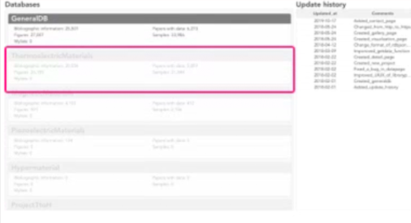
ログイン後に既存のデータベースが確認できます。
各データベースの下にデータの収集状況が表⽰されています。
"ThermoelectricMaterials"をクリックし、熱電材料データベースを例にStarrydata2の概要を説明します。
主要機能
[A1] Library: 全論⽂の表⽰。検索結果の表⽰。"Add Papers"によって My List に登録された書誌情報の表⽰。
[A2] Search papers: Starrydata2 に登録されているデータの検索機能。
[A3] My Lists: 利⽤者によって⾃由に追加編集できる論⽂リスト。
[A4] Add papers from DOI: DOI から書誌情報をインポートする機能。
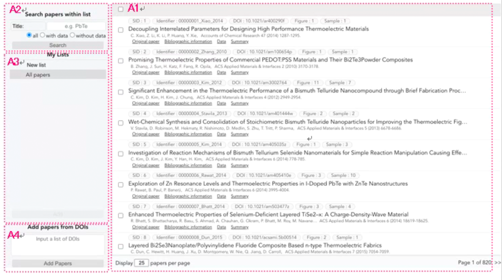
[A1] 登録論文の情報
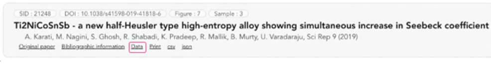
SID: Starrydata2 での ID。 Identifier: Starrydata2 での識別⼦。
Figure: xx, Sample: yy
すでに登録されている図表と試料の数。"Figure: 0"であればその論⽂のデータは未収集です。
Original paper: 出版社の原論⽂ページへのリンク。
Bibliographic information: 書誌情報へのリンク。
Data: 既登録のデータ及びデータ収集ページへのアクセス。
Print, csv, json: データの出⼒スタイル。
[A2] MY LISTの作成
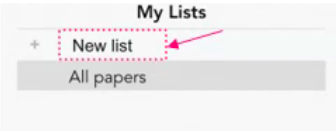
"My List"を作成します。"New list"をクリックしリスト名を⼊れるカラムをアクティブにします。
リスト名を⼊⼒した後、キーボードの"Enter"キーを押して確定してください。
検索した論文を追加
[A1] 論文検索
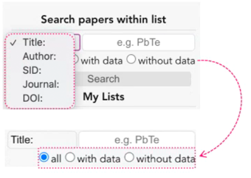
Title, Author, SID, Journal, DOI を使ってStarrydata2 に登録された全論⽂を検索することができます。キーワードを使って検索することも可能です。検索結果は右側のフィールドに表⽰されます。
論⽂は収集状況によって絞り込むことができます。
all:全登録論⽂
with data:既にデータ収集が⾏われた論⽂
without data:データ未収集の論⽂
DOIリストから追加
[A3] DOIリストから論文追加
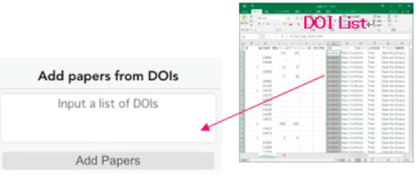
⾃分で作成した論⽂リストから論⽂を追加し My List を作成することが可能です。DOIを"Input a list of DOIs" に貼り付けて"AddPapers"をクリックします。
エクセルで作成したカラムから複数の DOI を直接貼り付けることができます。
LIBRARY [A1]
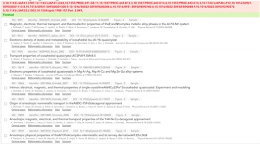
DOI に対応した論⽂が右側のフィールドに表⽰されます。
この操作は DOI の数によって数分かかることもあります。
全ての DOI について処理が完了すると"Finished" が表⽰されます。登録エラーの論⽂は上部に⾚で表⽰されます。
論文の準備
論⽂はPDFはhtmlの形式で準備してください。Starrydata2 には論⽂⾃体を管理する機能はありません。DOIから論⽂を読み込んだ後に"Original paper"をクリックすることで出版社の対象論⽂のページにアクセスすることができます。論⽂のダウンロードに際してはOpenAccess以外は所属機構のアクセス権が必要です。 Library機能では書誌情報を管理し、データ収集の進捗を確認することができます。 追加された論⽂はStarrydata2によって管理されますが、My Listは公開されません。
1. MY LISTへの論文追加
[A1]フィールドに表⽰された論⽂を"My Lists"に登録してみましょう。
Starrydata2内の検索結果の論⽂・⾃分がDOIから登録した論⽂の両⽅を対象とすることが可能です。1で作成したMy Listをアクティブにします。2で対象としたい論⽂を選択し、3のAddをクリックすることでこれらの論⽂はMy Listに保存されます。
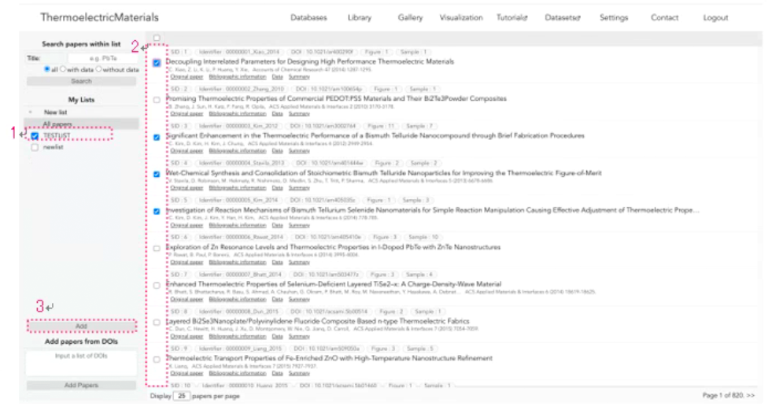
2．"DATA"をクリックします。
3. データ収集ページが表示されます。
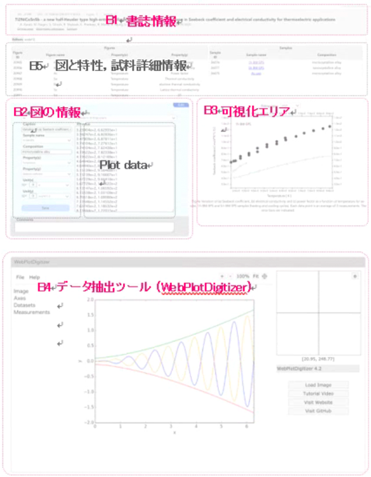
⼿順の概要：B4 で図から座標データを抽出します。
このデータを貼り付け B2 に試料の情報を⼊⼒します。
B3で図が正しくトレースされているか確認します。試料と特性の詳細が登録後に B5 に表⽰されます。
図の選択 [PDF OR HTML FILE]
4. LISTの書誌情報に対応したPDFもしくはHTMLファイルを開きます。
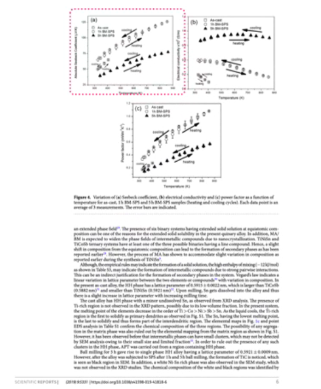
図のスナップショットを撮ります。
ショートカットキー
Mac OS: command + shift + 4
Windows: win + shift + s
以降の⼿順についてはYoutubeでもご確認頂けます。（1ʻ08）
画像読み込み [B4]
5. コピーした図をWEBPLOTDIGITIZERに読み込ませます。
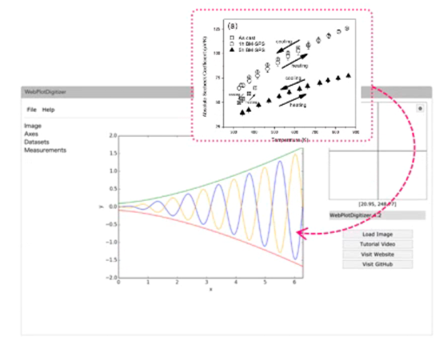
直接貼り付けられない場合は⼀度画像として保存した後、WebPlotDigitizer の File から画像を読み込んでください。
INSTRUCTION [B4]
6."2D(X-Y)PLOT"を選択し、"ALIGN AXES","PROCEED"をクリックします。
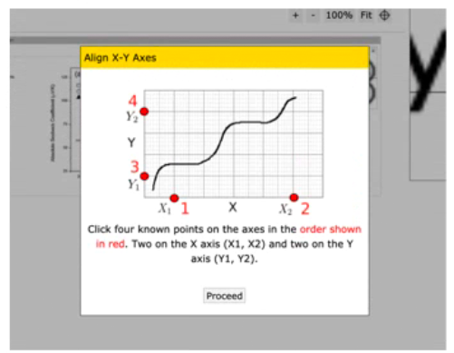
- 注意
以降の⼿順を⾏なっている最中にリロードを⾏うと、WebPlotDigitizer 上のデータは全てリセットされてしまいます。
⼗分に注意してください。
軸の設定 [B4]
7. 軸の設定を行います。
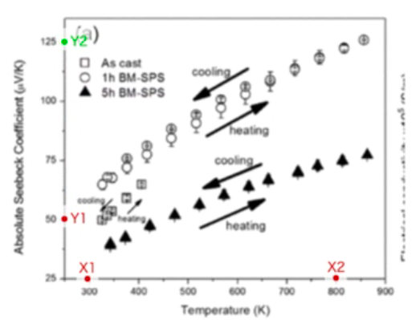
前画⾯で表⽰されたx1,x2,y1,y2の順に各軸でキリの良い数字をクリックします。これが抽出する数値の基準となるので正確に設定して下さい。
右上に拡⼤図が表⽰され、キーボードの⽮印キーで微調整が可能です。終わったら"Complete"をクリックし、各基準点に対応した数字を⼊⼒します。対数の場合は対数のボックスにチェックを⼊れて下さい。
データセットの作成 [B4]
8. データセットを作成します。
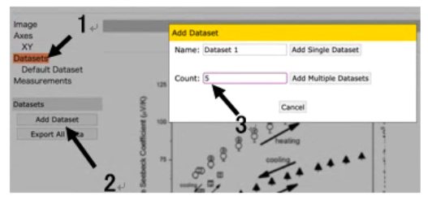
1の"Datasets"，2の"Add dataset"の順にクリックします。図中の試料の数を3の"Count:"に⼊⼒し、"Add multiple datasets"をクリックするとデータセットが作成されます。
データセットの数は以降の⼿順でも追加・削除することができます。
データ点のトレース [B4]
9. データ点をトレースします。
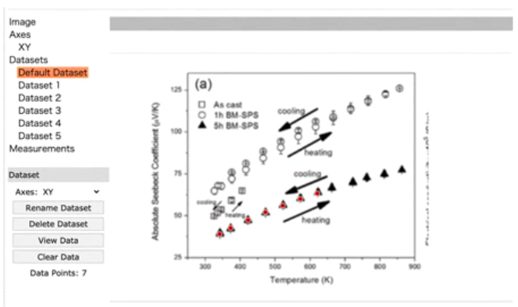
⼀番上のデータセットを選択すると、データ点を指定できるようになります。試料ごとのデータ点をクリックしていくとデータセットに座標が保存されていきます。
⼀つの試料についての登録が終わったら、次のデータセットをクリックし同様にデータ点をクリックしていきます。
より効率的なトレースについては以下の動画を参照して下さい。
図情報フィールドのアクティブ化 [B2]
10. データを登録するために編集モードにします。
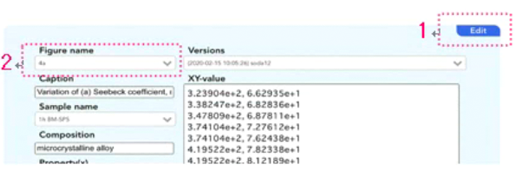
[Edit]をクリックすると背景が⻘に変わり、編集が可能になります。
[Figure name] に4a, 4（a）などの図の名前を⼊⼒し、"Enter"キーを押すことで確定します。（以降変更不可）同⼀論⽂中では同じ名前の"Figure Name"を再度使うことはできません。
11. 試料情報を入力します。
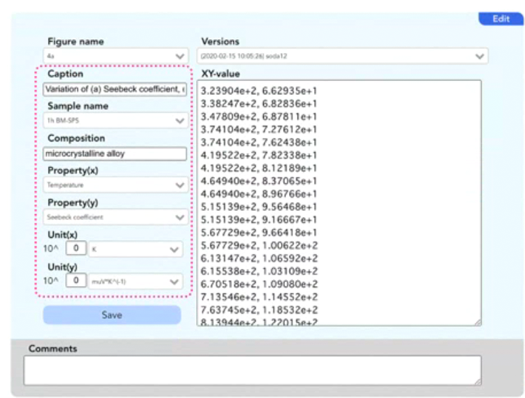
Caption：図に記載されている説明をコピーし貼り付けます。
SampleName：試料名を⼊⼒します。同⼀試料を他の図でも使⽤している場合には同⼀のSampleName に登録する必要があります。 ⼊⼒後"Enter"キーを押すことで確定します。
Composition：化学式を⼊⼒します。1-x 等で換算が必要なものについては換算後の化学式を⼊⼒して下さい。SampleName と Composition は⼀対⼀で対応している必要があります. Composition か SampleName の⼀⽅を変更し登録を⾏うと上書きされてしまうため注意して下さい。ampleName と Composition に⼊⼒した情報は後で編集することが可能です。
Property (x, y)：図内の特性をドロップダウンリストから選択します。
Unit (x,y)*：図内の特性の単位をドロップダウンリストから選択します。冪乗がある場合はここで⼊⼒します。
- 注意
< > " ' &の 5 つの⽂字と、"Ω", "µ"などの特殊⽂字は登録できません。
適宜削除し、"ommega"や "mu"アルファベットに置き換えて下さい。記載された単位がドロップダウンリストに⾒つからない場合、新しい単位を登録することができま す。この際、他の表⽰法で同じ単位が登録されていないかをよく確認した上での登録をお願いします。
登録された単位は全てのユーザーで共有されます。
登録は Unit に新しい単位を⼊⼒し "Enter" キーを押して確定します。
Procedure of this section is available on YouTube.（0:50）
https://youtu.be/9LFXtAHlNnU
取得情報のコピー [B4]
12．トレースしたデータをコピーします。
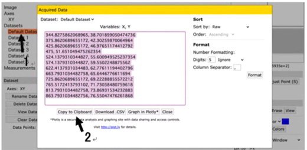
データセットをクリックすると 座標化されたデータ点が"Acquired data"として表⽰されます。
"Copy to Clipboard"をクリックしデータをコピーします。
コピーデータの貼り付け [B4]
13. ＸＹ－VALUEにコピーしたデータを貼り付けます。
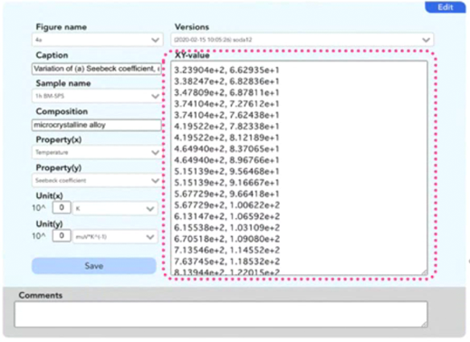
13. でコピーしたデータを"XY-value"に貼り付けます。 （ショートカットキー：command or ctrl + v）
14. 可視化エリアに反映されていることを確認します。
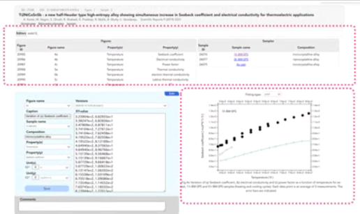
貼り付けられた座標情報は、[B3]の可視化エリアに反映されます。
実際の図とトレースされた点が対応していることを確認します。
15."SAVE"し、情報を登録します。
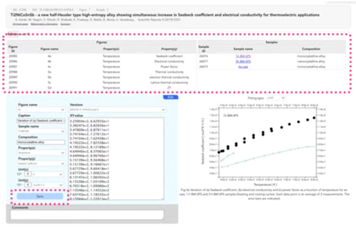
全てのカラムに情報が⼊⼒され、読み込んだ図が右側のプロットと対応していることを確認したら、"Save"をクリックし情報を登録します。
登録されると[B5]に図の詳細や試料情報が表⽰されます。
⼿順 13 に戻り全ての試料に対し同様の作業を⾏います。
各試料を登録するごとにデータが更新されていくので、最後の試料登録後は、そのまま次の図（⼿順 4 より）、もしくは次の論⽂（⼿順 2 より）の登録に移れます。